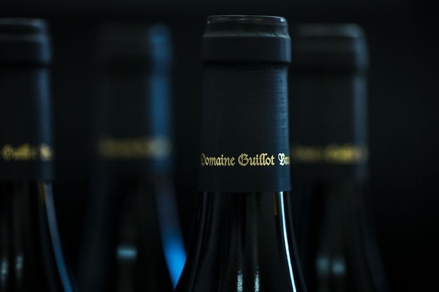
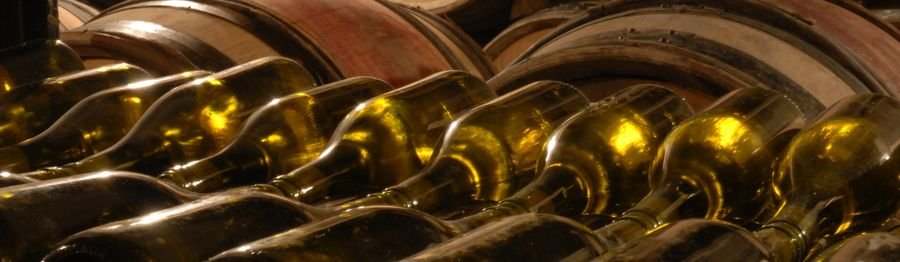
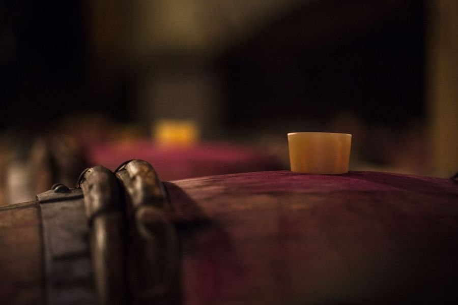
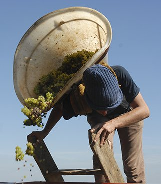
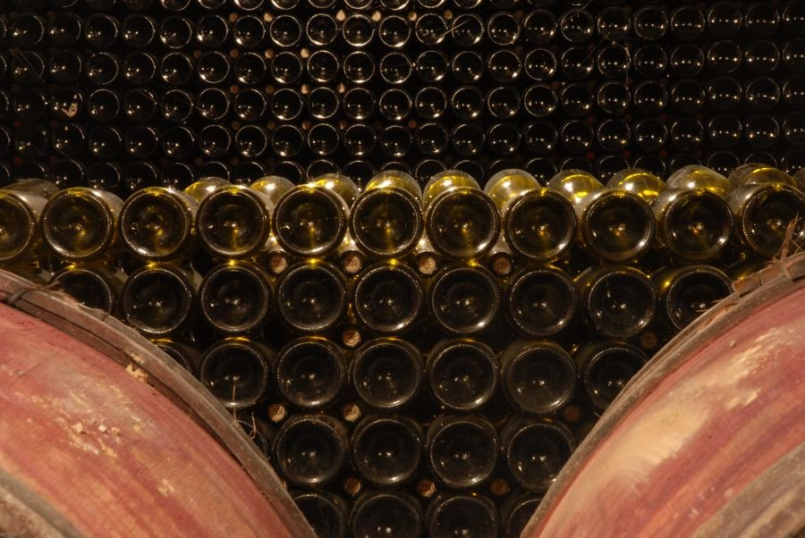
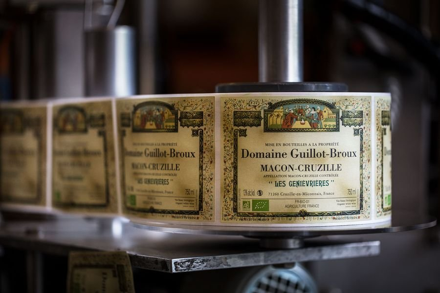
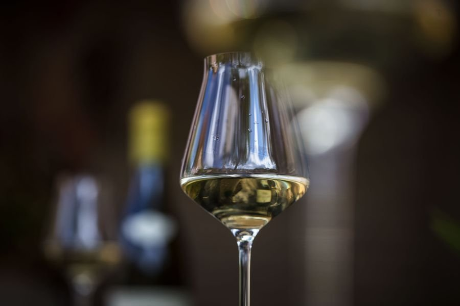
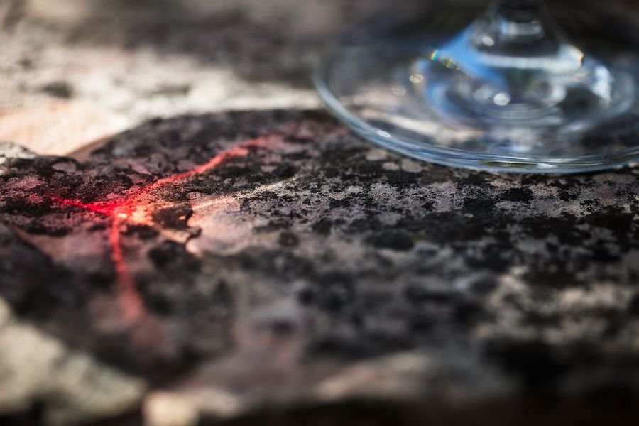
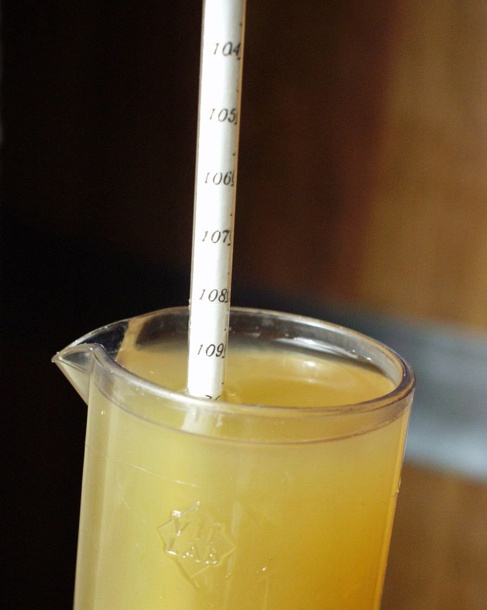

Vignoble · Cave · Vins · Terroir
Galerie Photos
Les images du domaine, du vignoble, de la cave et des vins. Cliquez sur chaque emplacement pour y ajouter votre photo.
📷
Pour ajouter une photo, remplacez le contenu d'un .slot par <img src="photo.jpg" alt="...">. Photos disponibles sur guillot-broux.com/galerie · Crédits : Mathieu Cellard & Mark Thomson.
01
Vue panoramique du vignoble
Cruzille, Mâconnais
Cruzille, Mâconnais
Vignoble
Crédit : Mathieu Cellard
+ Ajouter photo












14
Emmanuel & Patrice Guillot · portrait
Le Domaine
+ Ajouter photo
15
Cagettes de raisins
après récolte
après récolte
Vendanges
+ Ajouter photo
Optionnel
Vidéo du domaine
Intégrer une vidéo du domaine
Remplacer par un iframe YouTube ou Vimeo
Remplacer par un iframe YouTube ou Vimeo
Crédits photographiques
Photographies signées Mathieu Cellard et Mark Thomson. Toutes les images sont disponibles sur guillot-broux.com/galerie.
Comment ajouter une photo
Dans chaque slot, remplacez le <div class="slot-ph"> par <img src="photo.jpg" alt="...">. Formats recommandés : JPEG ou WebP, minimum 1200px de large.